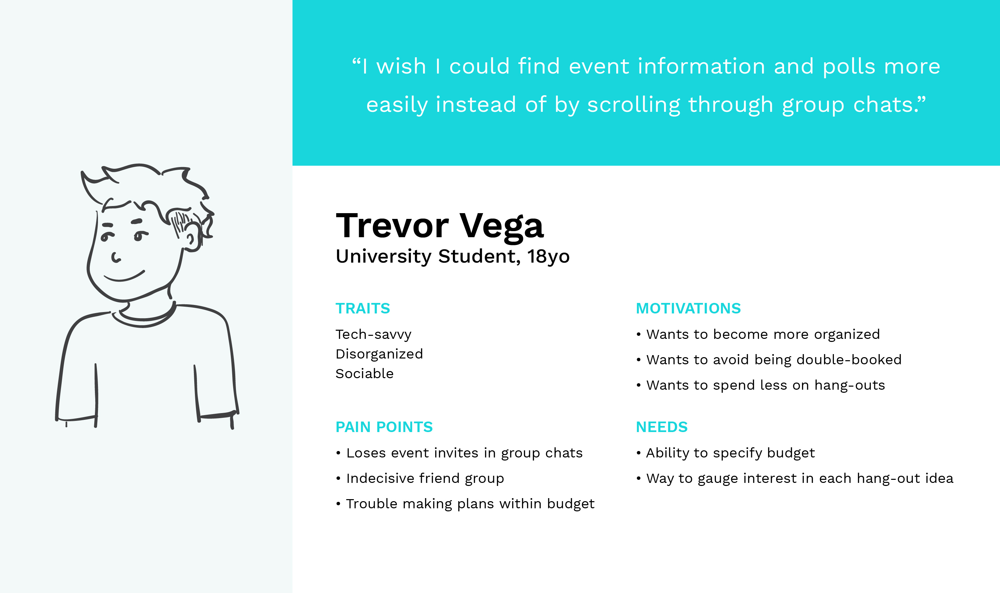
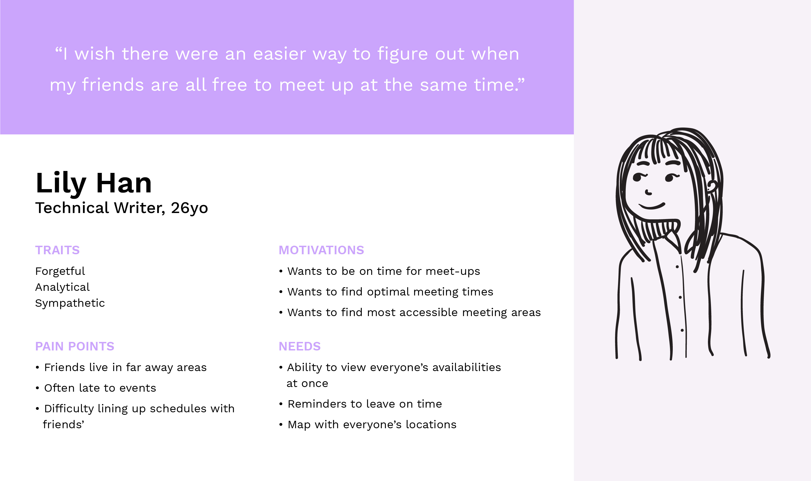
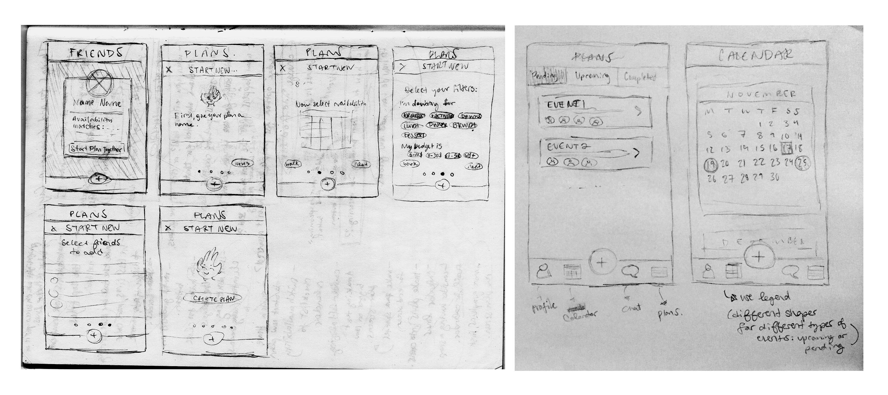
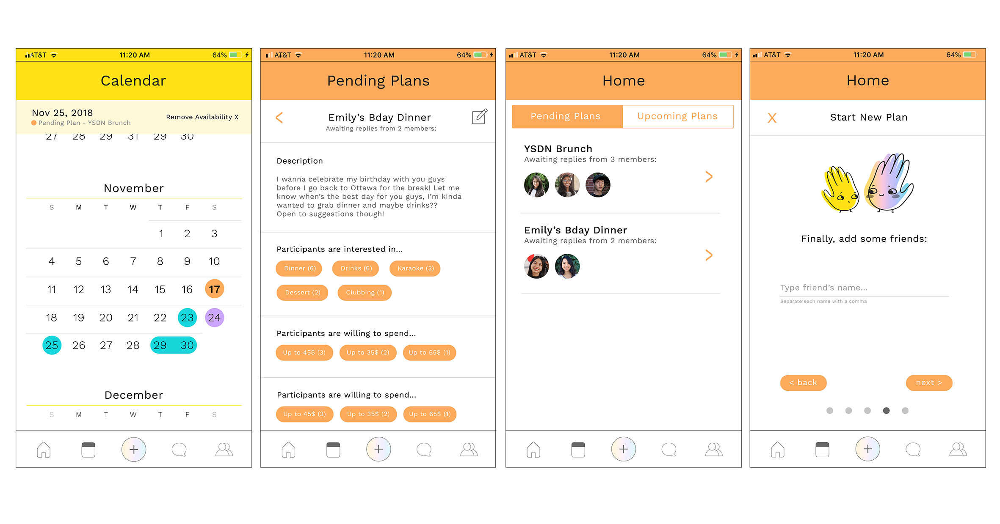
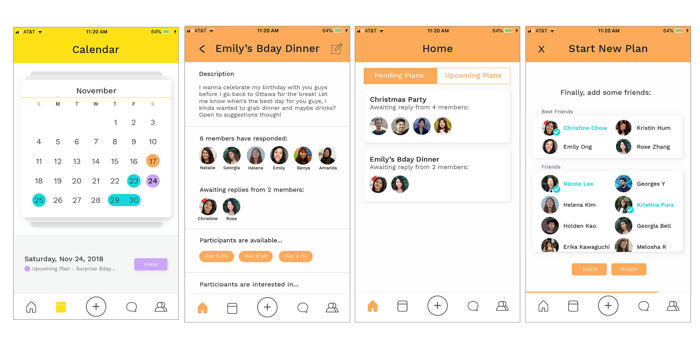
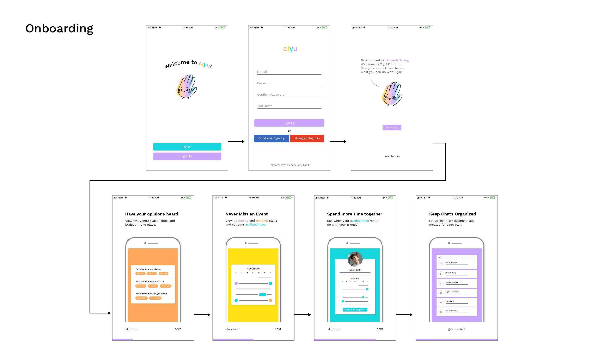
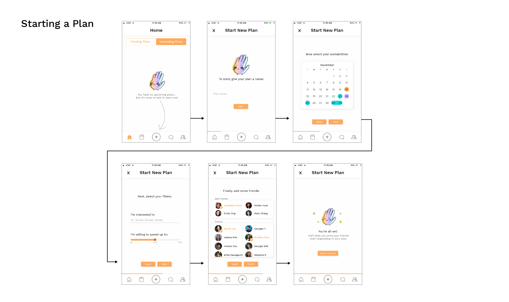
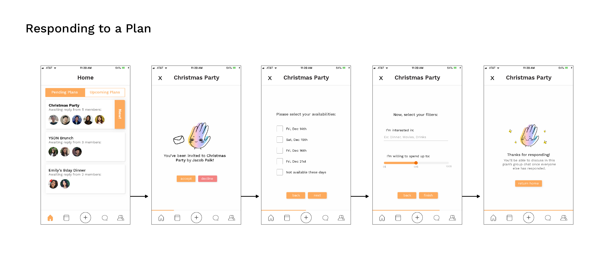
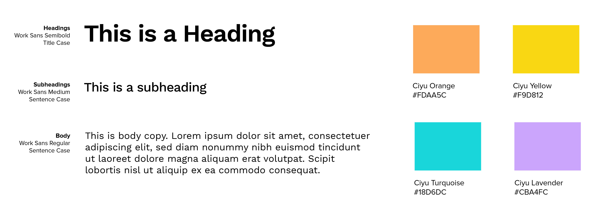
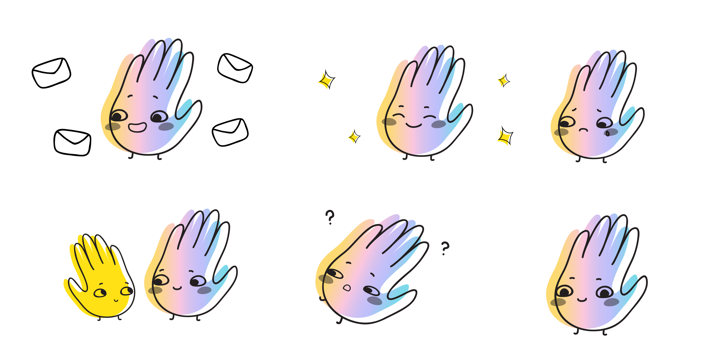

Timeline
Nov '18 (4 weeks)
Tools
Adobe Illustrator, InVision
How Can We Make Event Planning Between Friends Easier?
Friends have a hard time making plans with each other when they’re in large groups. When it comes to picking a time or place or activity, it can be hard to manage everyone’s availabilities and interests in a group chat. Even with the polls included in Messenger, information can be easily missed when scrolling through a group chat and it’s not always easy to jump to a poll unless someone has recently answered it.
Viewing Everyone's Availability and Budget in One Place
Ciyu is an event-planning app made for you and your frends. It facilitates communication between friends while planning an outing by providing spaces to answer specific questions and compiling everyone’s availabilities and budgets in one place when creating an event rather than making you scroll through a long string of message in a group chat.

When creating or replying to a plan, users have the option to select tags that represent what they are interested in. This can be for types of activities or for particular locations. Ciyu also features a budget slider that allows users to easily select how much they’re willing to spend at a given event. All of this information is collected from each participant before creating a chat for the event to ensure that everyone has answered all the important questions. Users can also view upcoming and pending plans in the Calendar as well as view matching availabilities with friends, which encourages them to make plans together.
Process
User Personas
I wanted to better understand my users and their problems in order to create my app, so I talked to other students and working people about the ways in which they go about planning events among friends. Based on these conversations, I made two user personas :
 Mockups
I went through a few iterations of designs since my original ones were very flat and buttons didn't look like they were buttons. I also pared down the colors a bit and made the app mostly white, using the colors more for accents than for backgrounds.
  User Flows
  Visuals
Four colors were picked to represent the app: orange, yellow, turquoise and lavender. These colors were chosen to reflect a bright, happy experience for users.
While different types of animals and inanimate objects were explored in terms of what to use as a mascot, a waving hand was selected to represent the idea that your friends are only a plan away. The use of the mascot Pom (a play on the word “palm”) across the app further reinforced the friendly and welcoming vibe of the app.
Final Outcome & Takeaways
This was my first time prototyping a mobile app rather than a website so it was interesting how my approach to it was so different since I didn’t have to code it. It made me a lot more aware of the various interactions on phones that have become so commonplace. While some other types of design projects have a lot more freedom, I had to be much more careful of “overdesigning” this one. This project was the most I’ve ever had to focus on usability, which seemed difficult at first because there was so much information to deal with and so many possible paths that a user could take.
There were many other features I wanted to include in the app, but could not because of time constraints and because I was afraid that adding too many features might make it too complicated or confusing to use. Perhaps if I were to rework this project, I might include a couple of the original features that I scrapped.
The Invision prototype can be viewed here.